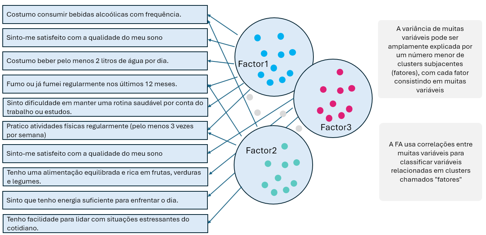

library(tidyverse)
library(psych)
library(GPArotation)
# este comando permite replicarmos os dados randomicos
set.seed(123)
# Simulando 300 pontos de dados com 3 fatores latentes
n <- 300
fator1 <- rnorm(n)
fator2 <- rnorm(n)
fator3 <- rnorm(n)
dados <- tibble(
consumo_online1 = fator1 + rnorm(n, 0, 0.5),
consumo_online2 = fator1 + rnorm(n, 0, 0.5),
consumo_online3 = fator1 + rnorm(n, 0, 0.5),
fidelidade_marca1 = fator2 + rnorm(n, 0, 0.5),
fidelidade_marca2 = fator2 + rnorm(n, 0, 0.5),
fidelidade_marca3 = fator2 + rnorm(n, 0, 0.5),
preocupação_preço1 = fator3 + rnorm(n, 0, 0.5),
preocupação_preço2 = fator3 + rnorm(n, 0, 0.5),
preocupação_preço3 = fator3 + rnorm(n, 0, 0.5),
misc1 = rnorm(n),
misc2 = rnorm(n),
misc3 = rnorm(n))New Post
O que é a EFA
A Análise Fatorial Exploratória (EFA) é uma técnica estatística multivariada usada para identificar a estrutura subjacente (fatores latentes) em um conjunto de variáveis observadas. Ela busca agrupar variáveis correlacionadas entre si em fatores comuns, revelando padrões ocultos nos dados.
É chamada de “exploratória” porque não parte de uma hipótese prévia sobre o número ou a natureza dos fatores, ao contrário da Análise Fatorial Confirmatória (CFA), que testa modelos específicos.

Qual o objetivo?
O principal objetivo da EFA é reduzir a dimensionalidade dos dados e descobrir estruturas latentes que explicam as correlações entre variáveis. Isso permite:
- Identificar agrupamentos naturais de variáveis.
- Compreender melhor os construtos teóricos por trás dos dados.
- Preparar modelos mais simples e interpretáveis.
- Apoiar o desenvolvimento de escalas e instrumentos de medida (como questionários).
De onde vem?
Ela surgiu no campo da psicometria e da psicologia, especialmente para entender traços de personalidade e habilidades cognitivas. Foi desenvolvida como uma resposta à necessidade de compreender fenômenos complexos que não podiam ser observados diretamente, mas inferidos a partir de múltiplas variáveis.
Ela se baseia em conceitos de correlação, covariância e álgebra linear, especialmente decomposição de matrizes.
Como fazer?
Aqui está um passo a passo prático para realizar uma EFA em R:
Preparar os dados verificando se há dados faltantes, certifique-se de que as variáveis são numéricas e correlacionáveis.
Verificar a adequação dos dados usando teste de Kaiser-Meyer-Olkin (KMO) e ou teste de esfericidade de Bartlett.
Escolher o número de fatores usando scree plot (gráfico de sedimentação), critério de Kaiser (autovalores > 1), e análise paralela.
Executar a EFA usando a função
factanal()ou pacotes comopsych(fa()), escolher o método de extração (ex: máxima verossimilhança, componentes principais) e escolher o tipo de rotação (ex: varimax, oblimin).Interpretar os resultados analisando as cargas fatoriais, verificando comunalidades e variância explicada e validar a consistência dos fatores.
Refinar o modelo eliminando variáveis com baixa carga ou comunalidade e reexecutando a análise se necessário.
Para praticar, iremos usar três exemplos sendo o primeiro com dados contínuos o segundo com com dados categóricos dicotômicos, e terceiro com dados mistos(categóricos dicotômicos e ordinais e numéricos).